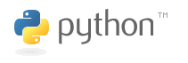

Introducción
Python es un lenguaje de programación dinámico e interpretado. Python puede utilizarse en múltiples sistemas operativos como Windows, UNIX, MAC, y también en plataformas de desarrollo Java y .NET.

Características
1 Python está desarrollado en C, pero ya no tiene tipos de datos complejos como los punteros de C.
2 Python tiene fuertes características orientadas a objetos y simplifica la implementación de la orientación a objetos. Elimina elementos como tipos protegidos, clases abstractas e interfaces.
3 Los bloques de código en Python se separan mediante sangría con espacios o tabuladores.
4 Python solo tiene 31 palabras reservadas y no tiene marcadores como punto y coma, begin, end, etc.
5 Python es un lenguaje fuertemente tipado. Después de crear una variable, esta corresponde a un tipo de datos. Las variables de diferentes tipos en una misma expresión requieren conversión de tipos.
Configuración del entorno de desarrollo
1 Puede descargar el paquete de instalación en www.python.org y luego instalarlo mediante configure, make, make install.
2 También puede ir a www.activestate.com para descargar el paquete de componentes ActivePython. (ActivePython es un empaquetado binario del núcleo de Python y de módulos comunes; es el entorno de desarrollo de Python publicado por ActiveState. ActivePython facilita la instalación de Python y puede utilizarse en varios sistemas operativos. ActivePython incluye algunas extensiones comunes de Python y la interfaz de programación para entornos Windows). En cuanto a ActivePython, si eres usuario de Windows, descarga e instala el paquete msi; si eres usuario de Unix, descarga el paquete tar.gz y descomprímelo directamente.
3 Los IDE de Python incluyen PythonWin, el complemento Eclipse+PyDev, Komodo, EditPlus.
Versiones
python2 y python3 son actualmente las dos versiones principales.
En los dos casos siguientes, se recomienda usar python2:
1 Cuando no puedes controlar completamente el entorno donde vas a implementar.
2 Cuando necesitas usar ciertos paquetes o extensiones de terceros.
python3 es la versión recomendada oficialmente y con soporte total en el futuro. Actualmente muchas mejoras de funciones solo se realizan en python3.
hello world
1 Crear hello.py
2 Escribir el programa:
if __name__ == \'__main__\':
print "hello word"
3 Ejecutar el programa:
python ./hello.py
Comentarios
1 Tanto los comentarios de línea como los de bloque se marcan con # seguido de un espacio.
2 Si necesitas usar comentarios en chino en el código, debes agregar la siguiente declaración de comentario al principio del archivo Python:
# -* - coding: UTF-8 -* -
3 El siguiente comentario se usa para especificar el intérprete.
#! /usr/bin/python
Tipos de archivos】
1 Los tipos de archivos de Python se dividen en 3: código fuente, código de bytes y código optimizado. Todos pueden ejecutarse directamente sin necesidad de compilar o enlazar.
2 El código fuente tiene la extensión .py y Python se encarga de interpretarlo.
3 Después de compilar el archivo fuente, se genera un archivo con extensión .pyc, es decir, un archivo de bytes compilado. Este archivo no se puede modificar con un editor de texto. El archivo pyc es independiente de la plataforma y puede ejecutarse en la mayoría de los sistemas operativos. La siguiente declaración se puede usar para generar un archivo pyc:
import py_compile py_compile.compile(‘hello.py’)
4 El archivo fuente optimizado lleva el sufijo .pyo, es decir, código optimizado. Tampoco puede modificarse directamente con un editor de texto. El siguiente comando se puede usar para generar un archivo pyo:
python -O -m py_complie hello.py
Variables
1 En Python las variables no necesitan declaración; la operación de asignación es a la vez el proceso de declaración y definición de la variable.
2 En Python, una nueva asignación crea una nueva variable. Aunque el nombre de la variable sea el mismo, el identificador de la variable no es el mismo. La función id() se puede usar para obtener el identificador de la variable:
x = 1 print id(x) x = 2 print id(x)
3 Si una variable no tiene asignación, Python considera que dicha variable no existe.
4 Las variables definidas fuera de las funciones pueden llamarse variables globales. Las variables globales pueden ser accedidas por cualquier función dentro del archivo y por archivos externos.
5 Se recomienda definir las variables globales al inicio del archivo.
6 También puedes colocar las variables globales en un archivo dedicado y luego referenciarlas mediante import:
El contenido del archivo gl.py es el siguiente:
_a = 1 _b = 2
En use_global.py se referencian las variables globales:
import gl def fun(): print gl._a print gl._b fun()
Constantes
Python no proporciona una palabra reservada para definir constantes. Puedes definir tu propia clase de constantes para implementar la funcionalidad de constantes.
class _const:
class ConstError(TypeError): pass
def __setattr__(self,name,vlaue):
if self.__dict__.has_key(name):
raise self.ConstError, “Can’t rebind const(%s)”%name
self.__dict__[name]=value
import sys
sys.modules[__name__]=_const()
Tipos de datos
1 Los tipos numéricos de Python se dividen en entero, entero largo, coma flotante, booleano y complejo.
2 Python no tiene tipo carácter.
3 Python no tiene tipos ordinarios internos; cualquier tipo es un objeto.
4 Si necesitas ver el tipo de una variable, puedes usar la clase type, que puede devolver el tipo de la variable o crear un nuevo tipo.
5 Python tiene 3 formas de representar cadenas: comillas simples, comillas dobles y comillas triples. Las comillas simples y dobles tienen la misma función. Los programadores de Python prefieren las comillas simples, mientras que los programadores de C/Java están acostumbrados a usar comillas dobles para las cadenas. En las comillas triples se pueden incluir comillas simples, comillas dobles o caracteres como saltos de línea.
Operadores y expresiones
1 Python no admite operadores de incremento y decremento. Por ejemplo, i++/i- es incorrecto, pero i+=1 es válido.
2 1/2 es igual a 0.5 antes de python2.5, y después de python2.5 es igual a 0.
3 La desigualdad es != o <>.
4 La igualdad se representa con ==.
5 En las expresiones lógicas, and representa Y lógico, or representa O lógico, not representa NO lógico.
Sentencias de control】
1 Sentencia condicional:
if (表达式) :
语句1
else :
语句2
2 Sentencia condicional:
if (表达式) : 语句1 elif (表达式) : 语句2 … elif (表达式) : 语句n else : 语句m
3 Anidamiento condicional:
if (表达式1) :
if (表达式2) :
语句1
elif (表达式3) :
语句2
…
else:
语句3
elif (表达式n) :
…
else :
…
4 Python no tiene una sentencia switch.
5 Sentencia de bucle:
while(表达式) : … else : …
6 Sentencia de bucle:
for 变量 in 集合 : … else : …
7 Python no admite sentencias de bucle como el for(i=0;i<5;i++) de C, pero se puede simular con range:
for x in range(0,5,2):
print x
Relacionado con arrays
1 Tupla: una estructura de datos incorporada en Python. La tupla está compuesta por diferentes elementos, y cada elemento puede almacenar datos de distintos tipos, como cadenas, números o incluso elementos. La tupla está protegida contra escritura, es decir, no se puede modificar después de su creación. La tupla suele representar una fila de datos, y los elementos de la tupla representan diferentes elementos de datos. Puede considerarse la tupla como un array no modificable. Ejemplo de creación de tupla:
tuple_name=(“apple”,”banana”,”grape”,”orange”)
2 Lista: similar a la tupla, también está compuesta por un conjunto de elementos. La lista permite operaciones de agregar, eliminar y buscar, y el valor de los elementos puede modificarse. La lista es el array en el sentido tradicional. Ejemplo de creación de lista:
list=[“apple”,”banana”,”grage”,”orange”]
Se puede usar el método append para añadir elementos al final y remove para eliminar elementos.
3 Diccionario: una colección de pares clave-valor. Los valores del diccionario se referencian mediante claves. La clave y el valor se separan con dos puntos, los pares clave-valor se separan con comas y se incluyen entre llaves. Ejemplo de creación:
dict={“a”:”apple”, “b”:”banana”, “g”:”grage”, “o”:”orange”}
4 Secuencia: una colección con capacidad de indexación y segmentación. Las tuplas, listas y cadenas pertenecen a las secuencias.
Relacionado con funciones
1 Un programa de Python está compuesto por paquetes, módulos y funciones. Un paquete es una colección de una serie de módulos. Un módulo es una colección de funciones y clases que tratan un tipo de problema.
2 Un paquete es una caja de herramientas que completa una tarea específica.
3 Un paquete debe contener un archivo __init__.py, que se utiliza para identificar que la carpeta actual es un paquete.
4 Los programas de Python están compuestos por módulos. Un módulo organiza un conjunto de funciones o código relacionado en un archivo; un archivo es un módulo. El módulo está compuesto por código, funciones y clases. Para importar un módulo se usa la sentencia import.
5 La función del paquete es lograr la reutilización de programas.
6 Una función es un bloque de código que puede invocarse repetidamente. Ejemplo de definición de función:
def arithmetic(x,y,operator):
result={
“+”:x+y,
“-“:x-y,
“*”:x*y,
“/”:x/y
}
7 El valor de retorno de una función puede controlarse con return.
Relacionado con cadenas
1 Salida formateada:
format=”%s%d” % (str1,num) print format
2 Concatenación de cadenas con +:
str1=”hello” str2=”world” result=str1+str2
3 La subcadena se puede extraer mediante índice/segmentación, o mediante la función split.
4 Extraer subcadenas mediante segmentación:
word=”world” print word[0:3]
5 Python usa == y != para comparar cadenas. Si los tipos de las dos variables comparadas no son iguales, el resultado será necesariamente diferente.
Manejo de archivos
1 Procesamiento simple de archivos:
context=”hello,world” f=file(“hello.txt”,’w’) f.write(context); f.close()
2 Para leer archivos se pueden usar las funciones readline(), readlines() y read().
3 Para escribir archivos se pueden usar las funciones write() y writelines().
Objetos y clases】
1 Python usa la palabra reservada class para definir una clase, y la primera letra del nombre de la clase debe ir en mayúscula. Cuando el tipo que el programador necesita crear no puede representarse con tipos simples, es necesario definir una clase y luego usar la clase definida para crear objetos. Ejemplo de definición de clase:
class Fruit:
def grow(self):
print “Fruit grow”
2 Cuando se crea un objeto, este contiene tres aspectos: el identificador (handle), los atributos y los métodos del objeto. Método para crear objetos:
fruit = Fruit() fruit.grow()
3 Python no tiene modificadores de protección para tipos.
4 Los métodos de una clase también se dividen en métodos públicos y métodos privados. Las funciones privadas no pueden ser llamadas por funciones fuera de la clase, y los métodos privados tampoco pueden ser llamados por clases o funciones externas.
5 Python usa la función "staticmethod()" o el método con la directiva "@ staticmethod" para convertir funciones ordinarias en métodos estáticos. Los métodos estáticos equivalen a funciones globales.
6 En Python, el constructor se llama __init__ y el destructor se llama __del__.
7 Método de uso de la herencia:
class Apple(Fruit): def …
Conectar a mysql
1 Usar el módulo MySQLdb para operar la base de datos MySQL es muy conveniente. El código de ejemplo es el siguiente:
import os, sys
import MySQLdb
try:
conn MySQLdb.connect(host=’localhost’,user=’root’,passwd=’’,db=’address’
except Exception,e:
print e
sys.exit()
cursor=conn.cursor()
sql=’insert into address(name, address) values(%s, %s)’
value=((“zhangsan”,”haidian”),(“lisi”,”haidian”))
try
cursor.executemany(sql,values)
except Exception, e:
print e
sql=”select * from address”
cursor.execute(sql)
data=cursor.fetchall()
if data
for x in data:
print x[0],x[1]
cursor.close()
conn.close()
Para seguir aprendiendo, mira aquí:Tutorial de Python。
Fuente original: http://roclinux.cn/?p=2338
Haz clic para compartir notas
<p style="font-size:14px;">¡Las notas deben ser una extensión del contenido de este artículo!</p><br> <p style="font-size:12px;"><a href="../tougao.html" target="_blank">Envío de artículos: haz clic aquí</a></p> <p style="font-size:14px;"><a href="./runoob-user-test-intro.html" target="_blank">Cómo obtener el código de invitación de registro</a></p> <h3 class="text-muted"><i class="fa fa-info-circle" aria-hidden="true"></i> Antes de compartir notas, debes <a href=".." class="runoob-pop">iniciar sesión</a>.</h3> <p><a href="./runoob-user-test-intro.html" target="_blank">Cómo obtener el código de invitación de registro</a></p>